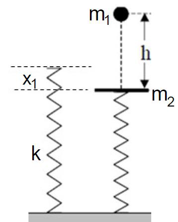
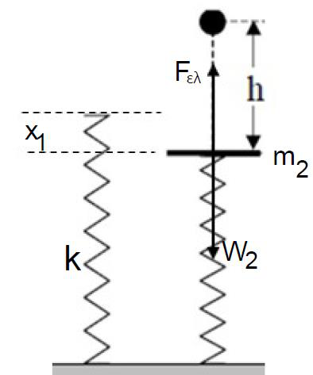
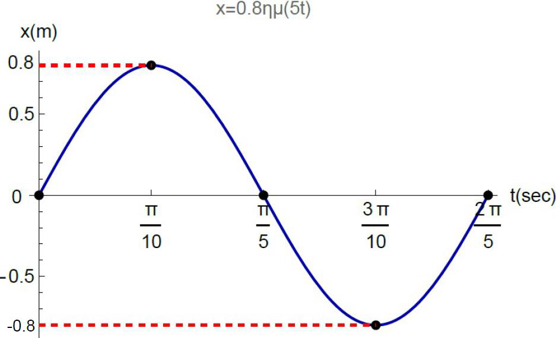

Τράπεζα Θεμάτων Γ΄ Λυκείου · Φυσική Προσανατολισμού
Θέμα: 23137
Εκφώνηση
Σώμα μάζας \(m_1=1\,kg\) αφήνεται να πέσει ελεύθερα από ύψος \(h=5\,m\) πάνω σε δίσκο μάζας \(m_2=4\,kg\), ο οποίος ισορροπεί σε κατακόρυφο ιδανικό ελατήριο σταθεράς \(k=100\,N/m\). Η κρούση θεωρείται μετωπική και ελαστική. Δίνεται \(g=10\,m/s^2\) και η αντίσταση του αέρα είναι αμελητέα.

4.1. Να βρείτε το μέτρο της ταχύτητας \(υ_1\) με την οποία το σώμα προσκρούει στον δίσκο. Μονάδες 5
4.2. Να βρείτε τις ταχύτητες του σώματος και του δίσκου αμέσως μετά την κρούση. Μονάδες 6
4.3. Να βρείτε τη μέγιστη δυναμική ενέργεια του ελατηρίου. Μονάδες 8
4.4. Να γράψετε την εξίσωση απομάκρυνσης για την Α.Α.Τ. του δίσκου και να την αποδώσετε γραφικά στο διάστημα \(0\le t\le T\). Θετική φορά θεωρείται προς τα κάτω. Μονάδες 6
Λύση
4.1.
Από τη διατήρηση της μηχανικής ενέργειας κατά την ελεύθερη πτώση:
4.2.
Για μετωπική ελαστική κρούση με τον δίσκο αρχικά ακίνητο:
4.3.
Στη θέση ισορροπίας του δίσκου η παραμόρφωση του ελατηρίου είναι:

Η κυκλική συχνότητα της ταλάντωσης του δίσκου είναι:
Αμέσως μετά την κρούση ο δίσκος περνά από τη θέση ισορροπίας με ταχύτητα \(υ'_2=4\,m/s\), άρα αυτή είναι η μέγιστη ταχύτητα της ταλάντωσης.
Η μέγιστη δυναμική ενέργεια του ελατηρίου αντιστοιχεί στη μέγιστη παραμόρφωση \(x_1+A\).
4.4.
Η εξίσωση έχει μορφή \(x=A\sin(\omega t+\varphi_0)\). Τη στιγμή \(t=0\), αμέσως μετά την κρούση, ο δίσκος βρίσκεται στη θέση ισορροπίας \((x=0)\) και κινείται προς τη θετική κατεύθυνση. Άρα \(\varphi_0=0\).
Η περίοδος είναι:
